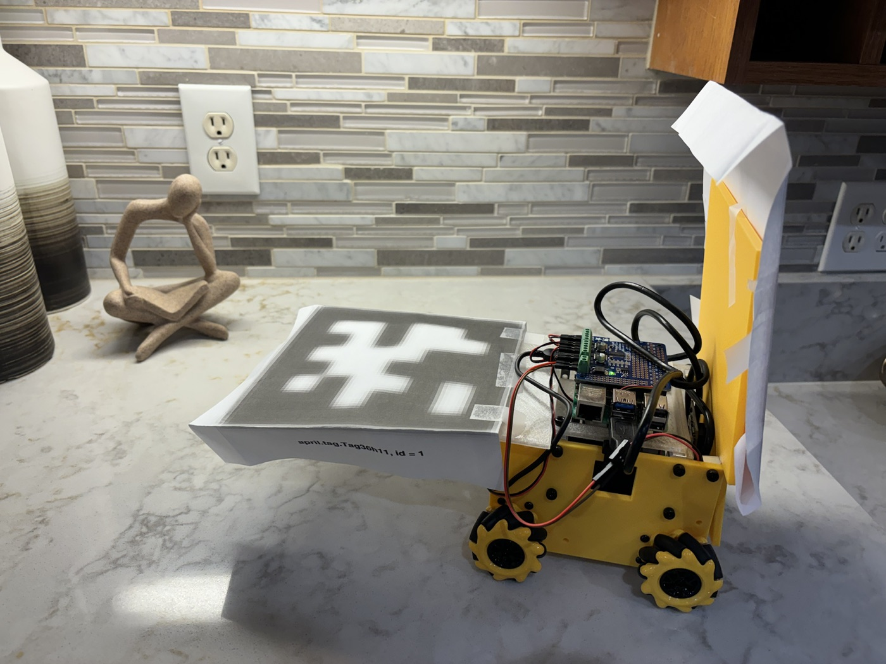

Worked across robot hardware, controls, and test setup.
HStar / engineering internship
Aerospace minibot navigation system
Summer 2025 engineering internship building compact robots for movement simulation, including hardware, navigation code, camera-based localization, and test controls.
HStar engineering internship project.
Path planning, localization, CAD, fabrication, and control UI.

Prototype
Small robot platform for movement and localization tests.
The project centered on compact robots that could support controlled movement experiments. I helped connect the physical prototype, navigation logic, localization target, and test workflow.
Work
What I worked on.
- Wrote navigation code that translated target positions into executable minibot motion.
- Used camera-visible fiducials to estimate robot pose during tests.
- Designed and fabricated custom components for the prototype platform.
- Built control and integration pieces for repeated simulation runs.